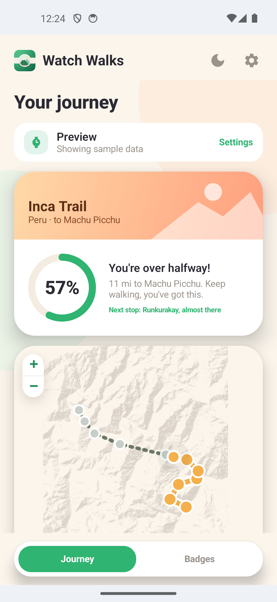
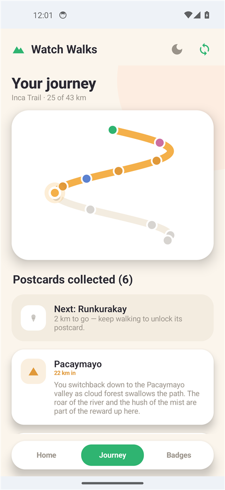
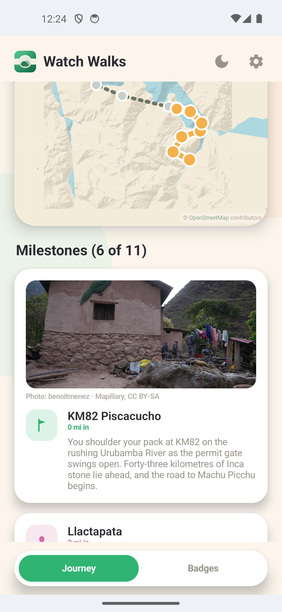
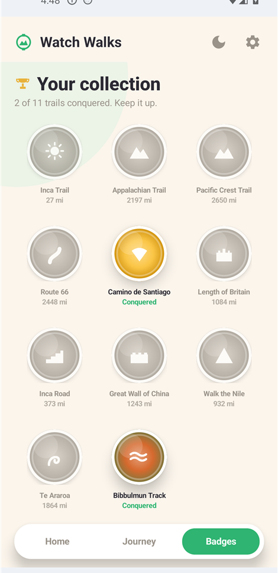

Walk the world's greatest trails, one real step at a time.
Watch Walks turns your ordinary days into an adventure. Live your life as normal and your everyday steps carry you down the world's greatest trails, right on your wrist. No GPS, no accounts, nothing to set up. Glance down whenever you like to see where you are, and collect the story of each place as you reach it.
Set it once. Then just live your life.
Walk your everyday life, and wake up somewhere legendary.
Install on your Garmin
Add a trail from the Connect IQ store. It runs quietly in the background, optimised for battery, with no GPS.
Walk as normal
Your daily routine becomes your journey. Check in whenever you like to see how far you have come and what is waiting ahead.
Unlock the landmarks
Reach each milestone to unlock a short story of the place, all the way to the finish line.
Watch every step carry you through legendary places.
A live progress ring, a story for every landmark, and a pull-down card for a quick check.
Your data never leaves your devices.
No sign-up. No cloud. No tracking. Watch Walks works entirely on your watch and your phone, the way it should be.
No accounts
Nothing to sign up for. Install and walk. We never ask who you are.
No servers
There's no cloud to hack or leak. Your progress is stored only on your devices.
No tracking
No analytics, no ads, no profiling. Just you and the trail.
From Peru to New Zealand, the world's greatest walks.
Eleven legendary trails to explore, each a complete journey from start to finish, beginning with the Inca Trail.
See where you are. Read the story. Earn the badge.
A free phone app, Android first and iPhone to follow, that turns your everyday steps into a living map. Follow your journey along the real route, read the story of every landmark you reach, and collect a unique badge for each trail you finish.




- A live journey map to follow your journey along the real route, seeing how far you have come and the landmarks still ahead
- A story to read at every landmark you reach, a glimpse of the place that you keep in your collection
- A unique badge for every trail, each with its own design and colours, yours the moment you reach the finish
- Sync with your watch, pulling your latest progress whenever you open your trail or tap Sync in the app
- Private by design, reading from your watch over Bluetooth and keeping everything on your phone
- Free companion app, with no account and no server
Take the app for a walk.
A live demo of the companion app, right here in your browser, loaded with sample data. Open the Journey, follow the map, read a postcard, and flip to your collection.
If the demo does not appear above, open it in a new tab. It can take a few seconds to start, and one person can explore it at a time.
Walk first, tell us what you think.
We're beta testing with Garmin watch owners on Android first, and we'd love to have you walk with us. Sign up now and we'll send your invite the moment a spot opens up.
Be first on the trail.
Join the beta and walk the world's greatest trails, one real step at a time.
Join the beta